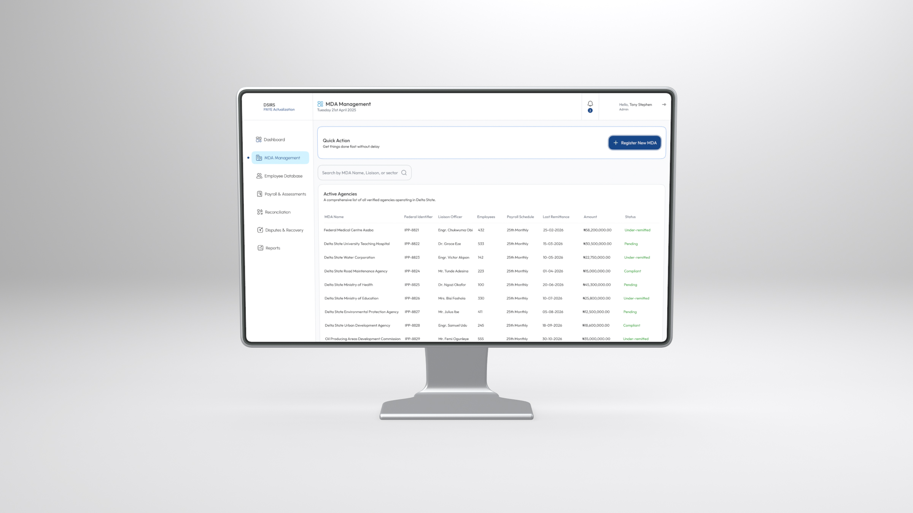
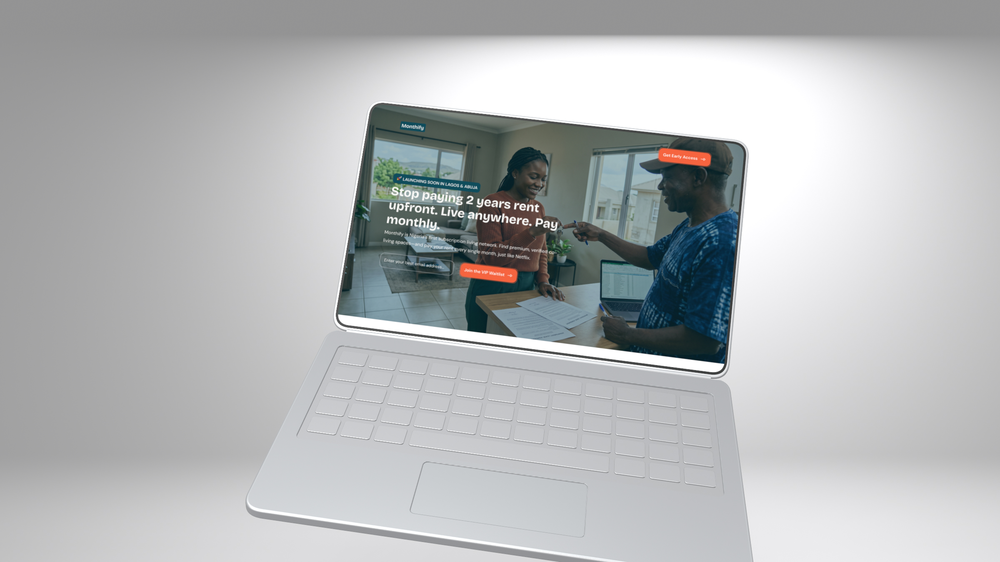
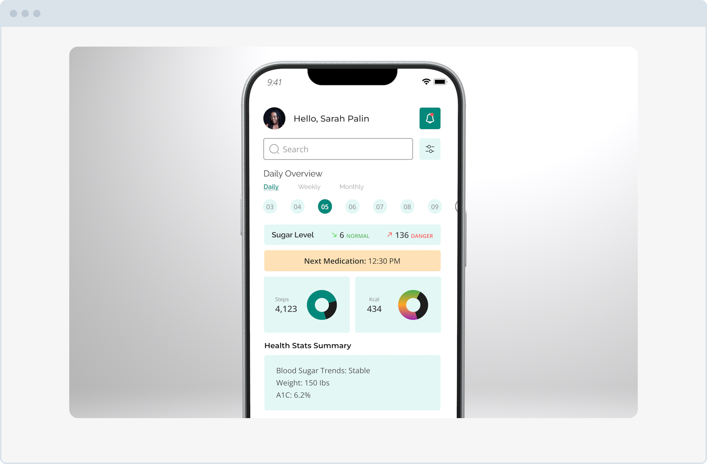

Opaque Remittance Gaps
Leadership lacked a single screen showing which registered organizations had filed monthly schedules and which were overdue.
Revenue Management · Executive Compliance
Product Designer · 4Core Integrated Services
2026
Managing Pay-As-You-Earn (PAYE) tax remittances across thousands of corporate employers and public institutions requires clear oversight. I designed an executive compliance dashboard and assessment workflow that helps state internal revenue teams track monthly filings, spot defaulters early, and reconcile actualized revenue.

Decision-makers and tax auditors needed more than static end-of-month spreadsheets; they needed a live view of expected versus actualized PAYE remittances across the state.
Leadership lacked a single screen showing which registered organizations had filed monthly schedules and which were overdue.
Verifying employee tax deductions against actual bank payments required tedious manual checks across separate schedules.
Generating sector-by-sector performance reports for state revenue meetings took hours of manual spreadsheet formatting.
I designed a layered dashboard architecture that gives executives instant clarity on statewide targets while allowing auditors to inspect individual employer schedules in two clicks.
Group total actualized revenue, active corporate remitters, and outstanding liabilities at the top of the workspace for immediate scanning.
Connect employer payroll uploads directly to automated tax calculation checks and clear compliance status indicators.
Replace heavy gridlines with generous spacing, clear status badges, and quick export actions for board-ready reporting.
Selected screens illustrating the executive analytics overview, employer compliance tracking tables, and PAYE remittance verification flows.


Design Outcome
The State PAYE Actualization interface brings structure and transparency to public revenue administration. By pairing executive-level visual summaries with clean audit workflows, internal revenue teams can monitor compliance and track actualized collections without fighting cluttered spreadsheets.

A dual-sided web platform for monthly rent, roommate matching, and property management.
View Case Study
A daily patient companion for blood glucose logging and medication reminders.
View Case Study